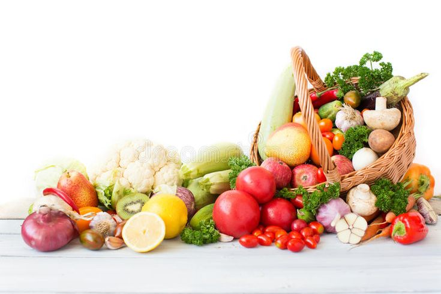

Sayuran
Sayuran
HASIL KEBUN LOKAL · GIRIMULYA
Segar dari kebun,
lebih dekat ke meja Anda.
Temukan pilihan sayuran untuk kebutuhan sehari-hari. SayurSegar hadir sebagai media informasi produk yang memudahkan masyarakat mengenal sayuran lokal dan menghubungi penjual.
Informasi produk dan pemesanan dalam satu tempat

Dukung hasil kebun lokal
Mulai dari pilihan sehari-hari
01
Pilihan sayuran
Kenali produk yang tersedia
02
Informasi harga
Lihat harga contoh produk
03
Kontak langsung
Tanyakan stok dan pemesanan
PILIHAN HARIAN
Produk pilihan


KENALI SAYURSEGAR
Informasi sayuran lokal, lebih mudah dijangkau.
SayurSegar merupakan website informasi yang membantu masyarakat mengenal beragam pilihan sayuran lokal. Melalui satu halaman, pengunjung dapat melihat produk, membaca informasi harga contoh, dan menemukan kontak untuk menanyakan ketersediaan sayuran.
Kami ingin membuat informasi produk lebih mudah ditemukan sekaligus membuka jalur komunikasi antara calon pembeli dan penjual.
Lihat pilihan sayuranMUDAH DAN PRAKTIS
Cara menggunakan SayurSegar
Temukan produk dan tanyakan kebutuhan Anda dengan mudah.
Jelajahi produk
Buka halaman produk untuk mengenal pilihan sayuran dan melihat harga contoh.
Hubungi penjual
Gunakan kontak yang tersedia untuk menanyakan harga terbaru dan ketersediaan produk.
Konfirmasi pesanan
Pastikan jumlah, harga, metode pembayaran, dan pengambilan atau pengiriman bersama penjual.
ADA YANG INGIN DITANYAKAN?
Temukan sayuran untuk kebutuhan Anda.
Hubungi SayurSegar untuk informasi produk dan pemesanan.